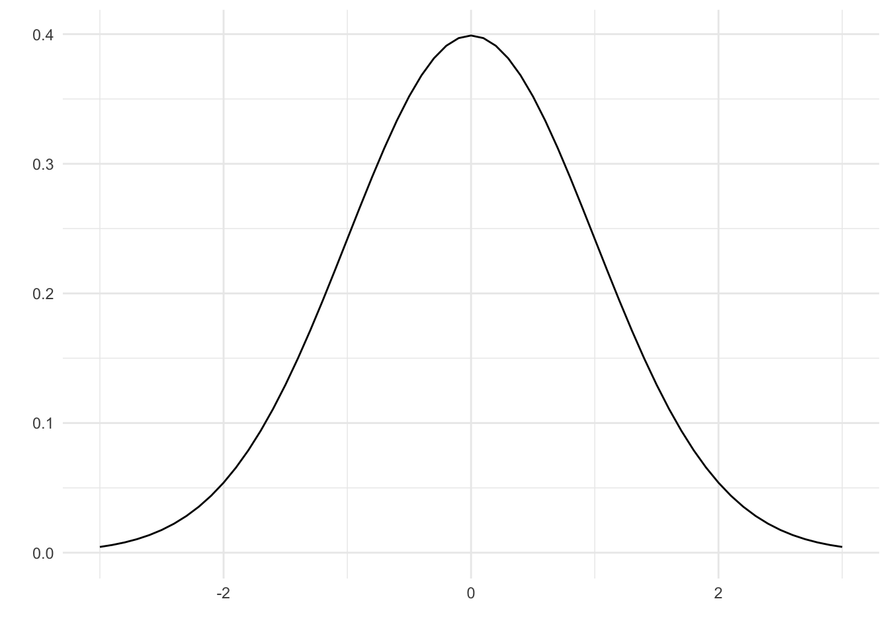
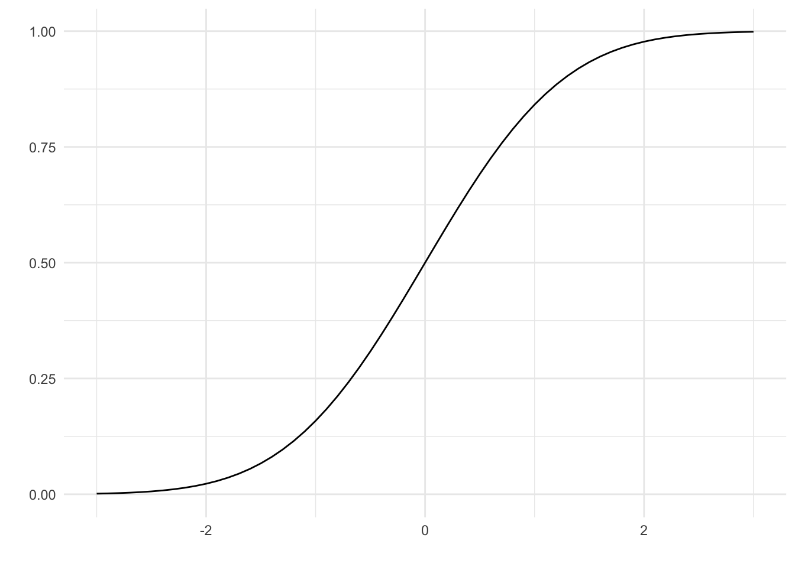
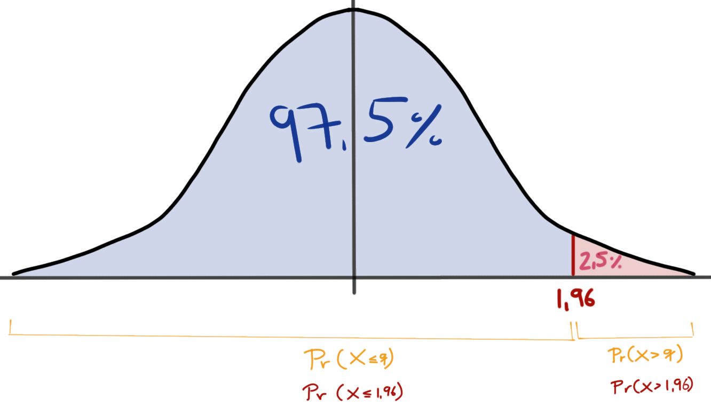

pacman::p_load(tidyverse, magrittr, ggfortify)
cbbPalette <- c("#000000", "#E69F00", "#56B4E9", "#009E73",
"#F0E442", "#0072B2", "#D55E00", "#CC79A7")11 Verteilungen
Letzte Änderung am 25. September 2023 um 13:37:53
Wir werden uns in der Statistikvorlesung noch vertieft mit Verteilungen beschäftigen. Deshalb hier nur ein kurzer Abriss und die Konzentration auf die Normalverteilung. Im Folgenden einmal die Formel für die Normalverteilung.
\[ f(y \mid\mu,\sigma^2)=\cfrac{1}{\sqrt{2\pi\sigma^2}} e^{-\cfrac{(y-\mu)^2}{2\sigma^2}}\quad -\infty<y<\infty \] Die Formel sieht ganz schön wild aus, aber wir müssen mit der Formel selber nicht arbeiten. Wir wenden die Normalverteilung höchstens in der Generierung von Daten an. Sonst nutzen wir die Eigenschaften der Normalverteilung für die Analyse von Daten.
11.1 Genutzte R Pakete für das Kapitel
Wir wollen folgende R Pakete in diesem Kapitel nutzen. Zum einen brauchen wir das R Paket tidyverse um uns die Daten zu bauen, die wir dann mit dem R Paket ggplot visualisieren wollen. Das R Paket ggplot ist schon in dem R Paket tidyverse mit enthalten.
11.2 Dichtefunktion
Die Funktion dnorm() gibt den Wert der Wahrscheinlichkeitsdichtefunktion (eng. probability density function, abk. PDF) der Normalverteilung bei einer bestimmten Zufallsvariablen \(x\), einem Populationsmittelwert \(\mu\) und einer Populationsstandardabweichung \(\sigma\) zurück.
Wir schauen uns hier einmal die Standardnormalvertielung an. Als eine Standardnormalverteilung bezeichnet man eine Normalverteilung mit einem Mittelwert von 0 und einer Varianz bzw. Standardabweichung von 1. Wir können uns einmal die Normalverteilung mit der Funktion ggdistribution() anschauen. Wir nehmen dafür die Werte auf der x-Achse von \(-3\) bis \(3\) in \(0.1\) Schritten. Dafür können wir die Funktion seq() nutzen. Wir erhalten die typische Glockenkurve einer Normalverteilung.
ggdistribution(dnorm, seq(-3, 3, 0.1), mean = 0, sd = 1) +
theme_minimal()
11.3 Kumulative Dichtefunktion
Wenn wir die kumulierte Fläche links von einem Wert auf der x-Achse bestimmen wollen, dann nehmen wir die Funktion pnorm(). Die Funktion pnorm() gibt den Wert der kumulativen Dichtefunktion (eng. cumulative distribution function, abk. cdf) der Normalverteilung bei einer bestimmten Zufallsvariablen \(q\), einem Populationsmittel \(\mu\) und einer Populationsstandardabweichung \(\sigma\) zurück.
In der Standardnormalverteilung ist die Fläche unter der Kurve gleich 1. Daher kannst du dir die Fläche unter der Kurve auch als eine Wahrscheinlichkeit vorstellen. Mit der Idee Wahrscheinlichkeit gleich Fläche kannst du dir dann auch merken, dass die Funktion \(pnorm()\) die Fläche berechnet. Das \(p\) steht dann für probability.
Hier dann auch einmal die Funktion für die x-Werte von \(-3\) bis \(3\) in \(0.1\) Schritten. Du kannst gut erkennen wie sich die Fläche dann auf 1 aufaddiert. Auch macht es vollkommen Sinn, dass wir bei einem x-Wert von 0 die Hälfte der Fläche erreicht haben. Immerhin definiert der Mittelwert die Mitte der Normalverteilung, so dass wir dann auch erwarten, dass die Hälfte der Fläche bei dem x-Wert gleich dem Mittelwert erreicht ist.
ggdistribution(pnorm, seq(-3, 3, 0.1), mean = 0, sd = 1) +
theme_minimal()
Wir können jetzt mit der Funktion rechnen und ein paar beispielhafte Fragen beantworten. Angenommen, die Größe der Männer an einer bestimmten Schule ist normalverteilt mit einem Mittelwert von \(\mu = 180cm\) und einer Standardabweichung von \(\sigma = 14cm\). Wie viel Prozent der Männer an dieser Schule sind größer als \(195cm\)?
pnorm(195, mean = 180, sd = 14, lower.tail = FALSE)[1] 0.1419884Angenommen, das Gewicht einer bestimmten Otterart ist normalverteilt mit einem Mittelwert von \(\mu = 60kg\) und einer Standardabweichung von \(\sigma = 10kg\). Wie viel Prozent dieser Otterart wiegen mindestens \(65kg\)? Hier kannst du mindestens auch als kleiner lesen.
pnorm(65, mean = 60, sd = 10, lower.tail = TRUE)[1] 0.6914625Angenommen, die Höhe der Sonnenblumen in einer bestimmten Region Niedersachsens ist normalverteilt mit einem Mittelwert von \(\mu = 250cm\) und einer Standardabweichung von \(\sigma = 12cm\). Wie viel Prozent der Pflanzen in dieser Region sind \(200cm\) bis \(220cm\) groß?
pnorm(260, mean = 250, sd = 12) - pnorm(240, mean = 250, sd = 12)[1] 0.5953432In dem letzten Fall haben wir einfach die Differenz zwischen zwei Normalverteilungen gebildet.
11.4 Inverse kumulativen Dichtefunktion
Einfach ausgedrückt, kannst du qnorm() verwenden, um herauszufinden zu welcher Fläche welcher Wert auf der x-Achse gehört. Du willst also nicht wissen, wie wahrscheinlich ein Wert für x ist, sondern gegeben einer Wahrscheinlichkeit den Wert von x haben. Ich habe dir hier ein paar Beispiele mitgebracht. Wir setzen also in die Funktion qnorm() die Fläche unter der Kurve ein, bei einer Standardnormalverteilung eben eine Wahrscheinlichkeit, und der erhalten den x-Wert wieder.
qnorm(0.95, mean = 0, sd = 1) %>% round(2)[1] 1.64qnorm(0.975, mean = 0, sd = 1) %>% round(2)[1] 1.96qnorm(0.99, mean = 0, sd = 1) %>% round(2)[1] 2.3311.5 Visualisierung von pnorm() und qnorm()
In der Abbildung 11.1 sehen wir den Zusammenhang zwischen der Funktion pnorm(q = 1.96) und der Funktion qnorm(p = 0.975) einmal visualisiert. Manchmal ist es daann doch recht verwirrend, was die beiden Funktion dann machen. Deshalb einmal hier der R Code für eine Standardnormalverteilung. Wenn du kein mean oder sd in den Funktionen angibst, ist der Standardwert (eng. default) der einer Standardnormalverteilung.
pnorm(q = 1.96) %>% round(3)[1] 0.975qnorm(p = 0.975) %>% round(2)[1] 1.96qnorm(p = 0.025, lower.tail = FALSE) %>% round(2)[1] 1.96In der Abbildung 11.1 sehen wir den Wert aus der Funktion pnorm(q = 1.96) mit \(0.975\) als blaue Fläche unter der Kurve dargestellt. Den Wert für die Fläche auf der x-Achse mit \(1.96\) ergibt dann die Funktion qnorm(p = 0.975) %>% round(2).

pnorm() und qnorm einmal an einer Standardnormalverteilung visualisiert.